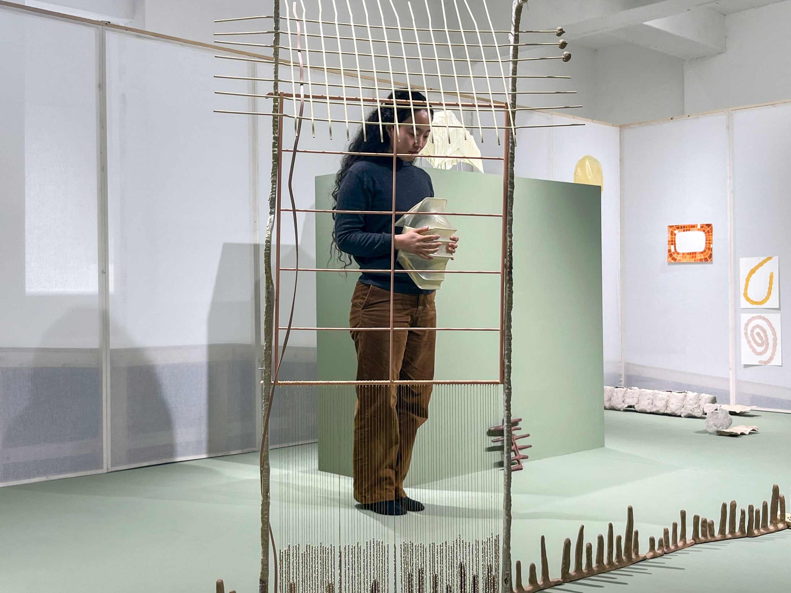
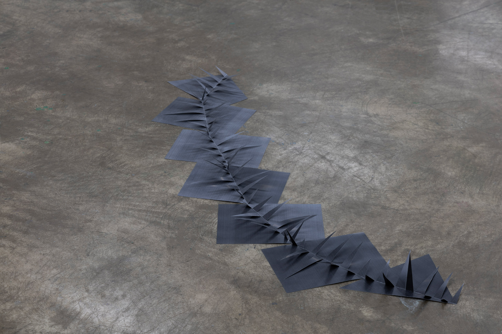
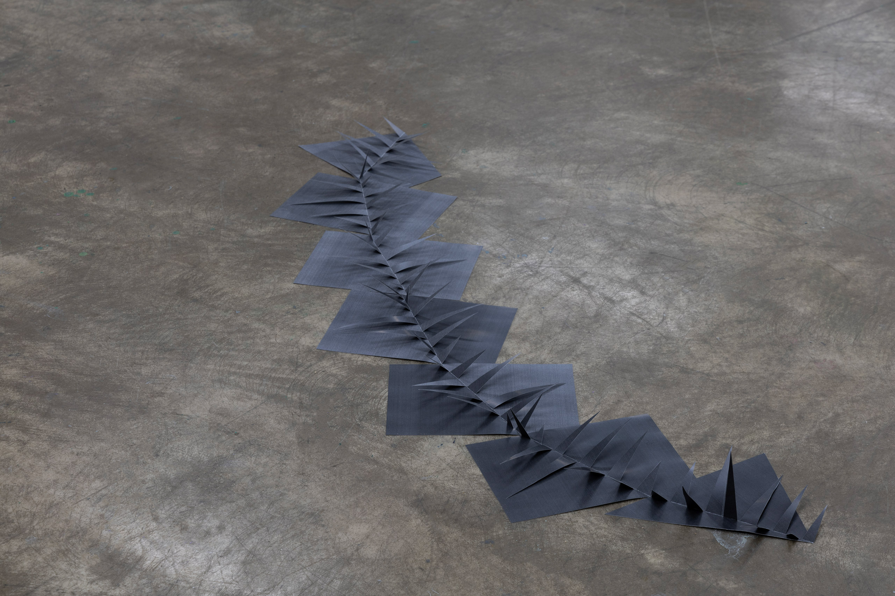
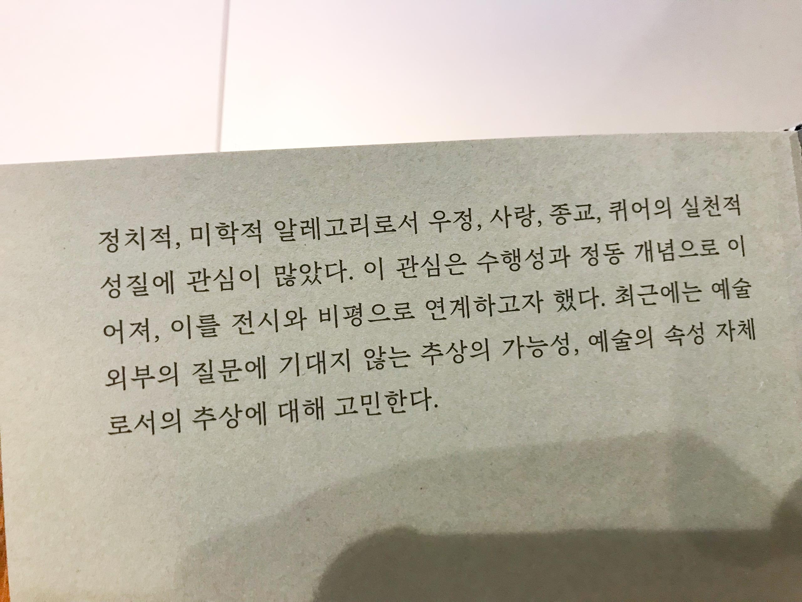

전시 보러 갈래? - 정서영과 함께 1
<1. 가르치는 일에 대하여
2. 동현이 되돌아보는 Love Your Depot
3. 물질의 내러티브에 귀를 기울이기
4. “이걸 왜 버려요? 작품 좋은데, 서울에서 전시해요.”
5. 작가 정서영에게 잘 해주기 프로젝트: Warming And Humidifying
.
.
.
.
.
.
.
.
.
.
.
.
.
.
.
.
.
.
.
.
.
.
.
.
.
.
.
.
.
.
박수지: 그러면 이렇게 항상 같은 멤버로 모이시는 거예요?
현진: 그런 건 아니고 프로젝트에 따라서 달라져요.
재훈: 작가나 기획자마다 각자의 관심사가 있듯이 학생들도 저마다의 관심사가 있잖아요. 그 관심사에 따라 모여 있기도 하고요. 그 무리에 컨택해서 참여 멤버를 모으는 게 첫번째 순서로 하는 일이에요. 이번 회차는 남영에게 먼저 제안했었고요.
남영이 퍼포먼스에 관심 있다는 걸 알고 있었으니 박수지 큐레이터님이나 정명우 작가님을 만나보면 어떨까? 하고 제안했는데, 박수지 큐레이터님을 만나고 싶다 하더라고요. 그렇게 게스트를 픽스하고 다른 멤버들을 더 초대했습니다. 현진은 기존에 알던 사이라 자연스레 같이하게 되었고 지희님은 전에 모르던 사이였는데 이걸 계기로 처음 만났어요.
1. 지지킴의 <Nocturnal Animal>과 노혜리의 <플라워 햇(플로어)>
박수지: 그렇구나. 다들 오늘 이 전시는 어떻게 보셨어요? 저는 지지킴 작가 작업이 꽤 재미 있었어요. 여러분들은 지지킴에 대해 아시나요?
남영, 재훈, 지희, 현진: 처음 들어봐요.
지희: 저도 지지킴 작가님의 작업을 인상 깊게 봤어요. 영상의 사운드가 인상 깊었고, 루프로 재생되는 상영 방식과 영상의 시점이 맞물려 특이한 느낌을 받을 수 있었어요.
사진: CJY ART STUDIO, 제공: Geomang Creative Studio
박수지: 맞아요. 1인칭 시점이라고 봐야 되나요?
현진: 되게 촉각적인 영상이었어요.
남영: 심리 묘사하는 장면들만 모아놓은 듯한 구성이 트레일러 영상 같기도 했고, 사건의 바로 직전 혹은 직후에 가까운 이미지들만 모아놓은 느낌이 들었어요. 시작과 끝이 따로 없는 영상이라고도 생각했고요.
박수지: 영상 자체도 계속 루프로 돌아가더라고요. 식물의 잎을 찢고, 무언가를 파헤치고 속을 잘라내는 그 장면이 촉각적이고 좋았어요.
재훈: 나뭇잎 자르는 이미지에 직물 자르는 소리를 입혔더라고요.
현진: 맞아요. 맞아요.
남영: 되게 애니메이션인 동시에 실사 영상처럼 보였어요.
박수지: 화면의 질감이라고 해야 되나? 그 질감이 조금 독특해서 어떻게 만드는 건지 궁금했어요. 3d 같기도 하면서, 실사 같기도 해서요. 그래서 아시는 분이 있다면 물어보고 싶었는데 혹시 아시나요?
현진: 풍경이 나오는 장면은 실제 풍경을 찍은 것 같기도 한데, 미니어처로 만든 공간을 헤집으면서 찍은 것처럼도 보였어요. 그 경계에 있는 기분이 들었어요.
박수지: 그럴 수도 있겠네요.
지희: 저는 영상의 화질이 선명하지 않아서 프린트한 이미지를 촬영한 건가? 싶었어요.
박수지: 저도 그 생각 했어요.
남영: 줌인 하는 장면들에서 그런 게 보였어요. 저는 노혜리 작가님을 좋아하고 퍼포먼스도 여러 번 봤었는데 노혜리 작가님 퍼포먼스에서 하나의 오브제가 여러 모양이나 맥락으로 읽힐 수 있는 지점이 이번 전시의 영상에서도 참 잘 보인다는 생각이 들었어요. 하나의 형태가 모자가 되기도 하고, 임신한 배가 되기도 하고 달팽이 집이 되기도 하더라고요.
<플라워 햇(플로어)>, 가변크기, 다목적 밀가루, 2021(2023)
사진: 남영
박수지: 그렇게 듣고 보니까 더 재밌게 느껴지네요.
현진: 노혜리 작가님이 퍼포먼스 하실 때 말과 이야기를 통해 공간 안에서 사물이 계속 바뀌는데, 이번 영상에서도 사물의 형상이 계속 다른 모습으로 바뀌는 게 노혜리 작가 같다, 그런 생각이 들었어요.
박수지: 맞아요. 언뜻 보기에는 미약하지만 꽤 자극적일 수도 있는 작은 변화 같은 것들이 항상 그녀의 퍼포먼스나 조각에서 보이는 것 같아요.
남영: 작은 변화라는 게 구체적으로 어떤 것을 말씀하시는 건가요?
박수지: 아주 작은 단위의 변화를 말한 거였어요. 예를 들어 퍼포먼스에 하나의 모자가 등장한다면 그 자체에 큰 변형이 가미됨으로써 전혀 다른 종류의 모자로 변하는 게 아니라, 모자를 배 위에 올려놓아서 임신한 배가 연상되도록 한다거나, 바닥에 놓아서 언덕처럼 보이게 하는 식의 작은 단위의 변화인 거죠.
현진: 맞아요. 조금 옮겨놓고, 툭 치고 하면서요.
박수지: 지난번에 사루비아에서 했던 전시랑 퍼포먼스를 봤었는데 그때도 여러 가지의 작고 연약한 오브제를 사용하셨던 게 기억이 나요.

사진: 남영
현진: 사루비아의 공간이 엄청 달라 보였어요. 공간의 성격이 이전이랑 달라서 완전 다른 데에 온 것 같았어요.
박수지: 맞아요. 싱크 같은 걸 만들었죠.
재훈: 싱크가 어떤 건가요?
현진: 좁은 통로를 만들어서 공간 안에 입구와 출구를 명확하게 정해놓았어요.
재훈: 전시장 안에 루트를 만들었던 건가요?
박수지: 네, 사루비아 내려가면 전시장이 바로 있잖아요. 거기에 점점 아래로 내려가는 식으로 통로를 만들어서 공간을 하나 만든 거예요. 마치 수영장이 아래로 파인 것처럼 생긴 싱크 구조물이 설치되어 있었어요.
재훈: 노혜리 작가의 퍼포먼스는 한 번도 안 봤는데, 퍼포먼스에 관심 있는 분들이 좋아하는 작가라고 언급한 걸 여기저기서 들었어요. 그래서 중요한 사람인가? 하는 인상을 가지고 있어요
박수지: 그렇구나. 최근에 그녀의 이름을 많이 본 것 같아요?
재훈: 최근이라기보다는 근 반년 동안? 음.. 현진과 남영은 퍼포먼스를 직접 하는데, 저는 퍼포먼스를 좋아하고 공부하기 위해 많은 시간을 썼지만 직접 하는 건 잘 모르겠거든요. 저희 각자 퍼포먼스에 대해서 떠올리는 내용이 다를 텐데 그랬을 때 노혜리 작가가 다루는 내용이 제가 관심 있는 것은 아니에요. 좀 거리를 두고 있었지만 주변에서 계속 소식이 들려오니까 다음에 뭘 하시면 보러 갈 것 같다는 생각이 들었어요. 그렇지만 오늘 제일 유심히 보지 않은 작업의 정보를 찾아보니 노혜리 작가의 작업이었네요...
박수지: 여러모로 나의 테이스트가 아니다?
재훈: 나의 테이스트가 아니지만 퍼포먼스 동네를 거닐다 보면 그 동선상 계속 마주치게 되는데, 인사를 해야 하나 말아야 하나 약간 그런 관계 같아요.
현진: 그럼 재훈이 관심을 가졌던 퍼포먼스 뭔가요?
재훈: 사실 퍼포먼스를 본 지 꽤 오래됐어요. 작년에 윈드밀에서 콜렉티브 야광이 한 퍼포먼스를 좋게 기억하는데, 어.. 그 이유는 제가 레즈비언 미술이나 퀴어에 관심이 있기 때문에 더 좋게 봤었고요. 퍼포먼스에 관심을 가지게 된 이유는 전에 들었던 어떤 수업 때문이에요. 저는 미술을 대학에 들어와서 처음 배웠는데, 그 수업에서 이루어졌던 작업들이 퍼포먼스나 설치 위주였기 때문에 어떤 좋음을 느낄 수 있는 미적 취향의 시작점 중 하나가 그걸로 잡혀버려서 계속 맞닿는 듯하네요.
2. 예술대학에서 무엇을 배우는가?
박수지: 근데 저 궁금한 게 있는데요. 여러분은 예술대학에서 뭘 배운다고 생각해요?
남영: 배우지 않아요.. (웃음)
박수지: 아.. 배우지 않아요? 그럼 무엇을...?
현진: (웃음) 대학에서 배운 거는... 4년 동안 다니면서 배운 거는 그냥.. 같이 하는 방법?
박수지: 같이 하는 방법!
현진: 왜냐하면 저희 학교, 특히 저희 과는 학생들을 방목하는 편이에요. 교수님들도 저희와 안 맞는다는 생각을 너무 많이 해서요.
박수지: 이거 오프 더 레코드 아니에요? (웃음)
재훈: ‘전시 보러 갈래?’가 그 분들을 독자로 상정하는 콘텐츠는 아니니까요.
박수지: 교수님들이랑 안 맞아요?
현진: 어떤 수업들은 너무 방목하니까, 그래서 저희끼리 이대로는 안 되겠다 싶어서 친구들을 모아 자체적인 수업을 만들기도 하고요.
박수지: 대단한데요?
현진: 몇몇 사람들끼리 어떤 교집합이 생기면 일시적으로 프로젝트를 하기도 해요.
박수지: 자기 조직 수업 같은 거네요. 이런 게 교수님들의 큰 뜻이었을까요? 학생들이 스스로 조직해서 배움을 찾도록 내가 방목하리라.
재훈: 근데 정교수나 부교수 같은 분들은 이런 걸 신경 쓰지 않을 것 같아요. 이 정도까지도 생각을 안 하지 않을까 싶네요.
현진: 맞아요. 그냥 아예 신경 쓰지 않아요.
남영: ‘3초 피드백’이라고.. 작업을 하면 ‘도전 정신이 좋네. 계속해봐.’ 라고 말씀하세요.
박수지: 우와!
남영: 진짜 심각해요. (웃음)
박수지: 그렇구나. 왜 그렇게까지 된 거죠?
재훈: 3초 피드백을 들은 건 무슨 작업이었어요?
남영: 제가 요즘 텐트를 만들고 있는데 그걸 보시고 ‘도전 정신이 좋다. 계속 해봐.’라는 말씀을 하고 가셨어요.
박수지: 그러면 서로 크리틱 같은 건 안 해요?
현진: 저희는 다 같이 모여서 서로 작업 얘기를 듣고 교수가 모더레이터의 역할이 되기도 하는 시간을 바라지만 전혀 이루어지지 않고 교수님이 학생들 각자의 실기실에 가서 ‘계속해봐’ 식의 체계도 없는, 그런 분위기의 피드백이에요.
박수지: 그렇구나.
재훈: 지희님은 학부를 동양화과로 다니셨죠? 어떠셨어요?
지희: 더 더 심했죠. 사실 저는 동양화를 하나의 매체라고 생각하는 편인데, 기성 작가로서 활동하는 대부분의 교수님들은 동양화를 하나의 고유한 장르라고 생각하시더라고요. 동양화에 대한 고리타분한 인식을 가지고 저희를 지도하시다 보니까 어긋나는 지점이 있었어요. 그래서 ‘나는 작업이든 공부든 그렇게 안 해야지’ 이런 생각으로, 많이 했던 것 같아요.
박수지: 그 부분을 조금 더 여쭤보자면 기성 화단이 가지고 있는 동양화에 대한 위계를 유지한다던가, 그림 자체에 관한 동시대성이나 확장성보다는 작품을 기존 시스템에 귀속시킨다는 뜻인가요?
지희: 확장 가능성은 애초에 논의 대상이 아니고요. 그냥 어떤 재료를 어떻게 다룰 것인지, 이 정도의 접근만 있어요. 동양화라는 재료가 가진 동시대의 확장 가능성이나 이 매체가 어떻게 읽히고 있는지에 대한 논의는 거의 없었어요.
박수지: 그렇구나. 약간은 순진한 질문이기도 했었는데 이렇게 심각한 이야기들을 들을 줄 몰랐네요.
재훈: 이 심각한 상황을 외부에서는 모르나요?
박수지: 네, 몰라요. 그리고 제가 학교랑 그렇게 가깝지 않은 편이라 모를 수도 있어요. 그리고 저는 이제 다 활동하고 있는 작가들을 만나니까 그들이 대학 얘기를 굳이 하진 않잖아요. 그래서 더 모르기도 하는 것 같고요.
재훈: 주변 분들 중에서 학교랑 가까운 사람들이 있으신가요?
박수지: 학교랑 가까운 사람들은 학교에서 수업하는 사람들이죠. 출강하시는 분들.
재훈: 그분들은 왜 출강하시는 거예요?
박수지: 그분들이요? 모르죠. 뭔가 대의가 있어서 출강하실 수도 있고, 아니면 생계에 관한 것일 수도 있고. 작가님들 중에 가르치는 일과 겸업해서 하시는 분들도 더러 있으시니까? 홍대는 그래도 교수님들이 작업 활동을 하시면서 가르치시지 않나요?
현진: 맞아요. 맞지만 그 작업들이 저희에게 그렇게 좋은 영향을 준다는 생각은 들지 않았던 것 같아요. 되게 좋은 수업이 있었고 좋은 작가님들이 오시긴 했었어요. 하지만 결국 그분들도 다 학교를 나가시니까 그걸 보면서 ‘아, 이게 진짜 이 학교의 시스템이구나’ 하는 걸 느꼈죠.
남영: 좋은 교수님들도 계시기는 하는데 제가 좋아하는 작가분들께 직접 배울 기회는 없었어요.
재훈: 저는 시각디자인과에서 수업을 듣기 때문에 회화과나 조소과와는 상황이 조금 다른데요. 후자의 경우 학과에 정교수 부교수 조교수가 있고, 강사가 있다고 했을 때 정말 실감할 수 있는 좋음을 느끼게 해주는 수업은 대부분 강사나 조교수가 담당하세요. 학우들이 부교수나 정교수의 작업을 본인의 미학적인 자양분으로 삼지는 않아요. 근데 강사나 조교수분들은 휙휙 바뀌시죠. 어떤 수업을 들어보고 ‘와 이거 좋다’ 했지만 다음 학기에 사라지는 경우도 많고요.
박수지: 여러분들은 기획 일이나 작가 활동을 계속하실 의지가 있으신 거죠?
남영: 네.
박수지: 결국은 이렇게 내가 직접 만들어서 찾아나가는 수밖에 없죠. 그래야만 한다는 게 조금 슬픈 일이긴 하지만.
3. 작품의 진실은 주제가 아니다
현진: 저는 기획자님께서 어떻게 해서 미술을 하게 되셨는지 궁금해요.
남영: 학부에서 경제를 공부하신 것으로 알고 있어서요.
박수지: 네, 저는 대학에 들어갈 때 경제학이라는 학문을 제일 모른다고 생각해서, 그런 아주 단순한 이유로 들어갔는데요. 교수님들이 너무 신자유주의 사조의 경제학만 가르치시는 거예요. 거시경제든 미시경제든. 그래서 참 재미가 없었어요. 그러니까 저의 가치관과 맞지 않는 태도의 경제학 수업이었어요.
그래도 그 중에서 조금 재밌었던 건 경제사 수업이었는데요. 경제사 수업은 경제학의 역사를 다루니까 거의 사회학이라던가 철학에 가까워요. 예컨대 우리는 애덤 스미스를 보이지 않는 손에 관해 이야기하면서 자신의 이기심을 모두가 실현할 때 시장 경제가 가장 이상적으로 돌아간다고 말 한 사람으로만 알고 있는데요. 애덤 스미스는 어디까지나 도덕 철학자의 입장으로서 보이지 않는 손을 이야기한 것이라고 볼 수 있어요. 누군가가 독점을 하거나, 정부가 독점을 용인해주는 사회를 지양하고, 모두가 참여해서 균형을 맞춰가는 사회에 관한 이야기를 한 거죠. 여기서 이기심이란 게 나만 잘 살면 된다고 얘기한 건 아니거든요.
어쨌든 경제사 수업에서 이런 도덕 철학적 계보의 경제학을 알게 되면서 재미를 느꼈죠. 그렇게 전공 수업을 게을리 들으면서 따로 준학예사 공부를 했었어요. 학예사 공부를 할 때 저도 여러분들처럼 이렇게 낯 모르는 다른 사람들과 스터디 모임을 조직하기도 했고요. 그러다가 대안공간 일을 하게 되었어요. 미술에 관심을 갖게 된 이유는 어떻게 보면 미술이 가장 언어로 환원되기 어렵다고 생각했기 때문인 것 같아요. 다시 말해 해독 불가능한 부분이 언제나 남아 있다는 요소가 너무 매력적이어서 미술을 좋아하게 됐어요. 그럼에도 불구하고 저의 마음 속에서 예술의 위계를 이야기한다면 저는 문학을 좀 상위에 두긴 해요. 그렇지만 미술이 가진 언어로 환원되지 않는 비밀스러운 성질에는 언제나 관심이 있어 왔어요. 그래서 미술을 하게 된 것 같아요.
현진: 문학이 왜 1순위라고 생각하세요?
박수지: 미술이 좋은 이유는 언어화될 수 없는 영역이 있기 때문이잖아요. 달리 말해 언어는 그만큼 사람을 가두는 성질이 센 것이고요. 흔히 누군가가 전시를 보러 갔을 때 작품이 여기 있는데도 작가의 의도를 따로 물어보고 싶어 한다던가, 작품 설명이 작품의 의미를 너무나 명료하게 지시한다거나 하는 그런 것처럼요. 언어는 어떻게 보면 일상적인 소통 도구이기 때문에 가장 쉬운 것이기도 한데 문학은 그런 언어를 가지고 완전히 또 비밀스러운 영역을 만들어내는 종류의 예술이라서 더 어렵다고 생각해요. 그래서 더 좋아하는 거 같아요. 소통 가능한 도구로 감지되지 않는 어떤 영역을 만들어내야 되는 일이니까.
재훈: 그럼 그 위계에서 가장 낮은 건 뭔가요?
박수지: 그런 건 모르겠는데요? 낮은 건 생각하지 않았어요.
재훈: 근데 위계를 생각하시잖아요.
박수지: 위계는 가상 상위로 치는 것을 이야기하다 보니 그런 것 같아요.
재훈: 위에만을 생각하기 위해서 위계를 만들어놓는 게 되게 특이하네요. (웃음)
박수지: 제일 좋아하는 거! 이렇게만. (웃음) 현재는 미술 일을 하고 있으니까 비교급으로 얘기하다 보니 그렇게 된 것 같아요.
남영: 그럼 요즘 읽고 계시는 문학이 있나요?
박수지: 저는 요즘에 도스토예프스키를 또다시 읽고 있는데요. 제가 최근에 박경리 작가님의 에세이를 읽게 되었어요. 박경리의 『문학을 지망하는 젊은이들에게』라는 책이 있는데 혹시 보셨나요?
지희: 제목만 알고 있어요.
박수지: 되게 독특한 책이에요. 박경리가 작가로서의 생애 중에 한 2년 정도를 대학에서 수업을 했어요. 박경리는 수업을 할 때 수업 자료를 전혀 준비해 가지 않고, 예를 들어 오늘 강의에서 ‘구성과 총체성’에 대해 이야기한다면 자신의 경험, 생각, 작가로서의 바탕 이런 걸 토대로 막 이야기해요. 그런 다음 맨 마지막에 ‘자, 오늘 제가 이런 주제로 이렇게, 이렇게 이야기했는데 오늘 이야기한 내용이 오늘의 강의 주제와 어떻게 연결될지 여러분 스스로 생각해보세요.’ 하며 강의가 딱 끝나요. 너무 멋있어요. 그 책은 그런 강의록을 누군가가 녹음을 해서 정리한 책이에요. 예술론을 아주 직접적으로 읽을 수 있는 파트들로 정리가 되어 있어요. 꼭 글을 쓰는 작가가 아니더라도 모든 예술가에게 통용될 만한 그런 예술론이거든요. 추천 드려요.
또 박경리의 『Q씨에게』라는 책이 있는데, 그 책은 Q라는 가상의 인물을 설정해 놓고 그에게 자기 이야기를 하는 거예요. 그 이야기는 다 예술에 관한 거죠. 자신이 겪은 일로부터 비롯된 예술에 관한 생각들. 그 책에 도스토예프스키가 나와서 ‘도스토예프스키의 책을 재밌게 읽었구나’ 하고 저도 도스토예프스키를 다시 찾아 읽고 있어요.
뭐 하나를 물어보면 내가 너무 길게 얘기하나요? (머쓱)
재훈, 남영, 지희, 현진: 아니요, 너무 재밌어요. (웃음)
재훈: 듣다 보니 모더레이터로 참여하신 키키 스미스 아티스트 토크에서 박경리의 문장을 인용하신 것도 생각났어요. 작가의 진실은 고백이 아니다.
박수지: 거기에 나오는 문장이에요. 『Q씨에게』. 요즘의 저에게 영향을 많이 주고 있어요. 제가 예전에 만들었던 전시들은 대부분 정치적인 이슈가 선명하게 드러났던 편이었는데요. 계속 전시를 만들고 공부를 하다 보니까, 정치적인 이슈에 대해 어떤 의견을 드러내기 위해서 하는 작품은 예술이 너무 수단화된다는 생각이 들더라고요.
그래서 그쪽이랑 점점 멀어지면서 예술의 형식처럼, 예술을 이루고 있지만, 예술 외부의 것들이 없는 그 상태 자체에 많은 관심을 두게 되었어요. 그러면서 박경리 선생의 글이 어떤 돌파구를 주었어요. 너무 형식주의적인 형식에 관한 관심이 아니라 내용이 충분히 좋으면 그것으로서 완전한 형식을 만들 수도 있다는 그런 가능성을 박경리의 에세이를 통해서 알게 된 것 같아요.
재훈: 아까 언급하신 정치는 어떤 정치를 말씀하신 건가요?
박수지: 정치는 사실 너무나 거대한 단어여서 함부로 사용하기는 좀 그렇지만 제가 이야기한 정치란, 현대미술에서 어떤 화제가 되는 이슈들을 콕콕 에디팅 해서 그것에 관한 작업을 하는 경우들이 있잖아요. 그런 일을 경계하고자 한다는 것이었어요.
남영: 토마 인터뷰하실 때 ‘예술을 창작하는 일과 예술을 대상화하는 일 사이에 혼란을 가지지 말아야 한다’ 라고 하셨는데,
박수지: 제가 그런 얘기를 했어요? 너무 싫다. (웃음)
남영: 그러면 예술을 대상화하지 말아야 한다는 게 방금 말씀하신 수단화와 같은 맥락인가요?
박수지: 네, 맞아요. 그 부분에 관한 생각은 지금도 비슷해요. 그렇다고 어떤 내용을 일부러 지양시키는 것은 아니고. 음.. ‘내용’이라는 단어를 사용하면 헷갈릴 수 있겠네요. 그 내용이 문제의식일 수도 있고 어떤 특정 주제일 수도 있겠잖아요? 그런데 그걸 다 지양시키고 예술의 형식에 관해서만 이야기해야 해! 이런 이야기가 아니라 내용이 충분히 예술가의 관점을 갖고 있으면 그것이 그 자체로 새로운 형식이 될 수 있다. 이런 거예요. 너무 이상적인 생각이기도 하죠. 사실.
재훈: 좀 이상적으로 들리긴 하네요.
박수지: 좋은 내용이면 당연히 좋은 형식이 붙을 수밖에 없다.
재훈: 저희 넷이 같이 나눴던 이야기 중 ‘우리가 박수지 기획자에게서 좋음을 느끼는 이유는 뭘까?’가 있었는데요. 그 중에서 최근에 사회적 이슈를 다루는 전시들이 많은데... 어... 갑자기 생각이 안 나네..
남영: 아! 무슨 말을 하는지 알 것 같아요.
박수지: 우와. 어떻게요?
재훈: 대화를 나눴으니까요. ^^
남영: 저희가 수지 큐레이터님 뵙기 전에 두 번 정도 사전모임을 가졌어서요. 요즘의 미술에서 생태! 환경! 그런 식으로 카테고라이징 하는 전시들을 볼 때 ‘이게 미술이 맞나’라는 생각이 들더라고요. 그런데 생각을 해보면 20세기 후반에 사회 이슈에 목소리를 내는 미술이 등장하는 시기가 있었고 거기에는 나름의 이유가 또 있었는데.. 그러면 지금의 미술은 어떤 방향성을 가지고 나아가야 하는 거지? 라는 고민을 가지며 사전 모임 때 대화를 나눴었어요.
그와 반면에 큐레이터님께서는 작품들을 특정 주제로 카테고라이징 하지 않은 전시를 기획하셔서 그런 경향에 대해서 어떻게 생각하시는지 궁금했어요.
박수지: 그러니까요. 저도 너무 비슷한 고민을 갖고 있기 때문에 어디서부터 말을 꺼내야 될지... 지금 말을 찾고 있는 중이에요. 일단! 주제로 무언가를 이야기한다, 어떤 주제 하나를 잡아서 전시를 만든다 라고 했을 때 본래 예술가에게는 각자의 고유한 세계가 있잖아요? 그 세계는 어떤 주제 하나로 완전히 포섭시킬 수가 없는 종류의 세계이고요. 그런데 요즘의 전시들 중 아주 안 좋은 케이스를 예로 들자면... 가상의 케이스입니다. (모두 웃음)
재훈: 실례로 들어주시면 안 되나요?
박수지: 안 돼요. 실례로 들기에는 너무 많으니까? 예를 들어 ‘생태주의’라는 주제가 있다면 몇몇 작가들의 작업을 그 특정한 주제 안으로 포섭시키는 방식으로 전시를 만들잖아요. 근데 저에게는 그 일의 순서가 너무 어색하게 느껴지는 거예요. 최초에 작가의 세계가 있고, 관객이 이 세계를 들여다보다가 타고 타고 생태주의까지 생각이 나갈 수는 있겠죠. 근데 생태주의로 작업을 ‘먼저’ 해석하는 일 자체가 순서에 안 맞다고 느낀 부분이 있어요.
당연히 동시대 예술의 성질 중에는 반성하거나 사유하는 것이 있죠. 인류학적인 방법론으로 혹은 사회학적인 방법론으로 현대 사회나 문화를 반성하기도 하는데, 그런 차원에서 주제라는 것이 설정되는 것이기도 하고요. 그렇지만 우리는 인류학자가 아니잖아요. 결국에는 예술로, 결국에는 작품으로 보여줘야 되는데 기획자가 하는 일은 그 좋은 작품을 매개하는 일이지 그 작품을 자신이 택한 주제어로 해석해서 이야기하는 게 아니라고 생각해요.
이 문제에 대해서 저는 약간 보수적인 입장인데, 요즘에는 큐레이터의 일이 굉장히 확대되어서 거의 작가로서의 큐레이터와 비슷하게 생각이 되곤 하잖아요. 그런 이유로 주제 기획전도 많이 열리고 저 역시 그런 기획전을 했지만, 저는 결과적으로 기획자는 매개자라고 생각해요. 제일 우선시되어야 되는 건 작품, 그다음이 작가. 그래서 큐레이터가 매개자로서의 기본이 갖추어져 있지 않으면 그 주제들을 징검다리 건너듯이 계속 뛰어넘는들 그것이 무엇을 위한 것인가? 예술을 위한 것이 맞나? 이런 생각이 들었어요.
재훈: 저는 그 주제를 다루겠다는 선택이 종종 출마 행위로 보일 때가 있어요. 선거 유세할 때 후보자가 “국민 여러분, 저는 이 주제에 관해 이러한 관점을 가지고 있으니 제가 대통령이 된다면 앞으로는 이렇게 하겠습니다~!”
박수지: 그런 선언적인 것이다. 그런 것일 수 있죠. 전시와 전시 기획의 역사에서 어떤 선언들이 역사적으로, 기념비적으로 중요했던 때가 있고 당연히 그런 선언적인 성질이 필요하긴 하지만 최근에 재생산되고 있는 주제 픽업pick-up형, 주제 편집형 전시들은 볼 수 록 곤란한 느낌이 든다는 거죠.
전시의 주제를 어떻게 설정하든 결국 전시를 보러 가는 데에 가장 중요한 건 작가님들의 작품을 보러 가기 위함이잖아요. 그런데 자신의 예술 세계를 뒤로 미뤄두고 해당 전시의 주제를 열심히 해석하는 일에만 몰두하는 작업에 저는 큰 매력을 못 느끼는 것 같아요.
지희: 너무 동감해요. 저도 지금 이제 뉴비로서 기획일을 시작하면서 그리고 기관에서 코디네이터로 일을 배우면서 느낀 게, 전시를 만들 때 그 프로세스가 정해져 있잖아요. 어떤 주제가 나오면 그 주제에 맞게 작가를 선정하는 그러한 과정들에 있어서, 저는 현타가 종종 왔었어요. 제가 주체적으로 하는 경우가 아니었음에도 그 수단화라는 말이 저는 와닿았던 것 같아요.
일말의 죄책감이 들 때도 있고. 이렇게 전시의 형식을 빌려서 얻는 게 도대체 뭘까. 라는 생각이 들 때가 좀 있었어요. 그래서 작품이 우선이 되야 한다는 말이 너무 공감되고요. 정작 저도 전시를 준비하면서 다른 외부적인 요소에 치우쳐서 작품을 제가 스스로도 더 깊게 못 봤던 적도 몇 번 있었어서요. 그런 게 되게 반성이 되면서, 작품을 많이 보고 제가 그것을 스스로 더 해석하고 분석하는 과정이 제일 중요한 것 같아요. 그런 것들이 강조되지 않는 느낌이 들더라고요. 배움의 과정에서도 마찬가지지만.
박수지: 저 너무 공감해요. 그래서 요즘에는 다소 극단적이기는 하지만 죽은 작가들의 작품을 연구하는 일이 오히려 예술 전반에 더 좋은 일일 수도 있겠다는 생각도 하게 되는 것 같아요. 그리고 저도 일을 하면 할수록 미술사에 관한 중요성을 더욱 실감해요.
남영: 어떤 면에서요?
박수지: 동시대에서 자주 회자되는 것들이나 반응들에 치우치지 않고 예술 자체를 좀 더 균질한 방식으로 연구하는 것? 그것을 위해서 미술사에 관한 앎이라든가 중요성 혹은 그 엄정함, 이런 것들을 더 염두에 두는 게 중요하다고 생각하게 되네요.
남영: 후대에 큐레이터님이 기획하신 전시가 어떻게 기록되겠다는 그런 상상도 하세요?
박수지: 아주 어렴풋하게 하는 것 같아요. 나중에 이런 게 이렇게 기록될 수도 있을까? 이런 생각은 하지만 막상 현장 안에 있으면 구체적으로 떠올리지는 못하죠.
현진: 그럼 전시를 기획하실 때 여러 작가들의 작품을 매개하는 기준 같은 것이 있으신가요?
박수지: 한 전시에서요?
현진: 네, 물론 언제나 다르겠지만 그래도 ‘코어’라고 할 수 있는 것이 있나요?
박수지: 저는 언제나 작가를 인터뷰하는 과정을 거쳐야 전시를 같이 할 수 있는 듯해요. 작가들의 재료나 형식, 관심사가 다 달라도 인터뷰를 통해서 드러나는 작가의 공고한 가치관이 있거든요? 그걸 느꼈을 때, 그 성향이 비슷한 작가들과 이런 전시를 같이 해볼 수 있겠다는 생각을 하게 돼요. 근데 이건 전시마다 다른 것 같아요.
남영: 그러면 가장 최근에 휘슬에서 하셨던 전시 《근사치》에서도 인터뷰를 하신 후 비슷한 성향을 가진 사람들로 전시를 구성해서 기획하신 건가요?
사진: 노경
사진: 남영
박수지: 그 전시는 작가들 사이의 비슷함보다는 그들 각각이 자신의 형식을 만들어 나가는 그 과정이 고유해서, 그런 차원에서 세 분을 초대했었어요. 아주 거칠게 얘기하면, 자기 길을 만들어서 가고 있는 사람들. 자기 스스로 성취한 연구에 나름대로의 궤적이 생긴 사람들. 그런 분들은 사실 많은데 이번에는 그렇게 세 분이었어요.
재훈: ‘궤적이 안 생긴 사람도 많은가요?’ 라는 질문을 하려 했는데 마지막으로 말씀해 주신 문장으로 답변이 됐어요.
박수지: 해결이 됐나요?
재훈: 해결까지는 아니지만 안 물어봐도 될 것 같아요.
박수지: 재훈님은 뭔가 이렇게 재훈님만의 호흡이 있으시다.
재훈: 그래서 많은 사람들을 당황하게 해요. 저도 좀 원만하게 잘 지내고 싶은데 순서를 항상 잘 못 지켜가지고. 여쭤보고 싶었던 질문 두 개가 있었는데 갑자기 생각이 안 나네요. 음...
박수지: 사진 찍어도 돼요?
현진: 네 (웃음) 어디를 봐야 하죠? 재훈이 수지 기획자님 인스타의 사진들을 엄청 좋아해요.
박수지: 아 그래요?
현진: 흑백 사진을 보면서 되게 감탄을 하는 (웃음)
재훈: 섭외 메일에도 보내드렸듯이 그 사진들을 보면 되게 잘 살아 보여요.
박수지: 잘 살아 보여요?
재훈: 일상에서 감정의 롤러코스터가 아무리 오르내리더라도, 내가 원하는 사람하고 어떤 최소한의 대화를 나눌 수 있는 그 상황만 있으면 다 괜찮다는 생각을 최근에 친구들이랑 대화하면서 하거든요. 기획자님이 올리시는 흑백 사진들 역시 단순히 그 사진만 있는 것이 아니라 그 사진 전후에 있었던 대화의 시간, 그 사람들과 같이 보냈던 시간이 있었을 테잖아요? 그 시간이 가져다주는 안전함도 있을 거고요.
박수지: 맞아요. 너무 맞는 말씀.
재훈: 그러한 일상의 단단함이 가장 좋다고 생각했어요.
박수지: 고마워요. 그렇게 생각해줘서. 그 사진들은 일종의 기록 같은 거잖아요. 되게 좋은 대화를 나누었을 때 남긴 기록 같은 건데, 그걸 볼수록 ‘나의 인간관계가 점점 좁아지고 있구나...’ (웃음) ‘맨날 만나는 사람만 만나고 있구나...’를 느끼고 있어요.
재훈: 저는 친구들이랑 만나서 놀거나 회의할 때 끝나면 같이 사진을 찍는데요. 그 사진을 나중에 들춰보면 아, 이때 이런 좋은 대화를 나눴었지 하고 기분이 나아져요. 제가 걷던 길로 다시 돌아가기 위해 다시 할 수 있는 최소한의 무언가 같기도 하고요.
아까 여쭤보고 싶었던 질문은 그거였어요. 저번에 지희님이 기획하신 전시를 보고서 같이 이야기 나눴을 때 그런 말이 나왔거든요. 전시를 하고 난 후, 이게 끝인가?
현진: 저도 방금 그 질문을 하고 싶었어요. 저희가 이야기했던 것은 어떤 전시가 있었을 때 그 전시에 참여한 사람의 개인적 성취로서는 맥락을 가지지만 이렇게 내놓고 끝인가? 종이 한 장으로 남는 전시의 흔적이라든지, 이대로 끝인가 하는 그런 생각에 대해서는 어떻게 생각하시는지, 그리고 더해서 기획자님이 미술 일을 하고 계시는 그 만족도가 어떠신지 궁금해요.
박수지: 미술계에 있는 만족도요? 저는 만족도를 딱히 생각해 보지 않을 정도로 좋아하고 있어요. 그래도 이쪽이 가장 안전지대인 것 같아요. 생각이나 대화를 나누는 방식이 여러모로 안전한 곳이다.
재훈: 어떤 의미에서요?
박수지: 폭력과 혐오로부터 가장 안전하다.
재훈: 뉴스 댓글 창 같은 걸 기준으로 안전하다고 말씀하신 건가요? 예를 들면 안전하지 않은 다른 계로는 어디가 있을까요?
박수지: 안전하지 않은 계는.. 그냥 다인 것 같아요. 그러니까 이 안전함이라는 게 사실 지루한 일일 수도 있다고 생각하거든요? 왜냐하면 이 세계 안에서는 우리가 대화하는 방법을 알고, 저렇게 대화하는 것은 조금 이상할 수 있겠다라는 어떤 감이 있고, 또 어떻게 보면 되게 배려가 많은, 서로 소통하는 방법을 이미 충분히 알고 있는 그런 계라고 생각해요. 그래서 그게 주는 지루함이 있을 수 있고 이 점이 오히려 뭔가를 하나마나한 소리로 만들게 되는 그런 경향이 있을 수 있어도, 정말 납득 불가능한 혐오나 폭력으로부터는 안전하지 않은가 하는 생각이 있어요.
남영: 그래도 미술계 안에서 일어나는 일들이 있잖아요. 말씀해주신 것처럼 다른 계보다 훨씬 안전하다고 생각하고 그런 믿음이 있지만 예술계 내 폭력 사건들을 보거나 맞닥뜨릴 때 안전하지 않은 부분들도 많이 있다고 느껴요.
박수지: 네, 맞아요. 그것도 사실이죠. 그리고 한편으로는 이 계 안에만 머무는 것이 과연 예술에 좋을까? 라고 생각했을 때 결국 모든 질문은 언제나 ‘예술이 뭔데?’로 귀결되는 것 같아요. 예를 들어 ‘예술은 삶에 가까운 것이다' 혹은 ‘예술은 굉장히 형이상학적인 가치다' 처럼 예술을 어떻게 정의하느냐에 따라서 예술이 이런 커뮤니티 안에서만 머물러서는 안 되는 것일 수도 있고, 커뮤니티 밖에 있는 정말 낯선 영역에서 자신의 존재를 보여줘야 되는 일일 수도 있고, 부딪혀서 갈등을 만들어야 되는 일일 수도 있고, 너무 다양하잖아요. 그래서 각자가 어떤 가치관으로 예술을 믿고 있는지를 더욱 안전하게 드러낼 수 있는 장이 미술계여야 하고요. 그 계 안에서 또 하나의 목소리로만 미술이 작동하는 것, 예술의 성질이 작동되는 것은 파시즘이라고 생각해요.
재훈: 그래도 기획자님이 같이 활동하시는 분들 중에서는 다른 분야에 종사하시는 분들이 좀 있지 않나요? 김예영 디자이너나... 특히 기획자님이 최근에 같이 활동하셨던 오민 작가는 신예슬 음악 비평가나 문석민 작곡가처럼 음악씬 안에서 활동하는 사람들을 대화자로 끌어온다고 느꼈거든요.
박수지: 현대미술은 사실 모든 걸 잡아먹는 잡식성으로, 포식자 성질이 있잖아요. 그래서 우리가 알고 있는 다른 분야의 사람들은 그냥 미술계랑 다를 바가 없다고 생각해요. 다른 분야나 다른 계가 아니라 똑같은 예술계라고 생각해요.
재훈: 미술계가 아니라 예술계요?
박수지: 네, 제가 아까 미술계가 안전하다고 했던 이유는 우리가 사회에서 삶을 살아갈 때 기본적으로 충족되어야 한다고 여겨지는 가치들 있잖아요. 집을 사야 되고, 결혼을 해야 된다는 사회 일반의 기준으로부터 멀어질 수 있다. 그런 가능성을 얘기하는 거죠. 그래서 안전할 수 있는 것이고요.
지희: 안전하다는 것은 진짜 그 울타리 안에서 고요하면서도 계속 첨벙첨벙거리는 느낌인 것 같아요. 계속 움직이고 돌을 던지면서도 이것들이 안전하다고 느끼는 영역이다. 예술은.
4. 박민희의 <처사가> / 현진님은 어떤 작업하세요?
재훈: 그 돌 중의 하나로서 전시 《충녀》를 바라봤을 때, 저에게는 본 전시의 기획 배경이 특이하게 느껴졌어요. 본 전시를 기획하신 최주원님이 김기영 감독의 영화 '충녀'를 본 후 그 영화에 대해 같이 이야기하고 싶은 작가들을 큐레이팅했다고 하더라고요. 이 점이 아까 박수지 기획자님께서 작가들과의 인터뷰를 중요하게 생각한다는 말씀을 연상시켰는데요.
같이 대화하고 싶은 사람을 고르는 일에는 그 사람의 전문 지식이 이유일 수도 있지만, 어쨌든 실제로 대화를 해봤을 때 너무 이상한 소리는 안 할 것 같고 그래도 적당한 수준의 대화가 오갈 것 같다고 생각하는 사람들한테 대화하자고 하잖아요.
박수지: 아무래도 그렇겠죠. 그럴 거예요. 우리 다 그럴 거예요. 그런 면에서 진짜로 우리가 정말 커뮤니티 안에서만 살고 있는 것 같아요. 자기 커뮤니티. 그 외 다른 요소들은 무엇을 할지 모르는 너무 수상한 이웃들인 거죠. 이거는 지젝의 표현이지만, 의심스럽고 이상한 사람인 것 같다는 적대감을 미리 갖고 있고요. 근데 질문이 뭐였죠?
재훈: 질문이라기보다는 전시를 어떻게 봤는지 감상을 공유하고 싶었어요. 전시 《충녀》가 ‘여성’을 주제로써 다루고 있는 부분이 있잖아요? 지지킴 작가의 영상 같은 경우 촉각이나 청각이 주로 부각되는 작품이라고 생각했는데요. 미술에서 여성에 관해 다루는 작품이나 여성적인 미술 작품을 떠올려 봤을 때 사실 촉각이랑 청각은 예상되는 범위에 속하죠.
그런 이유로 지지킴의 영상에 대한 저의 감상 경험은 두 차례로 나뉘어요. 감상 전반부에는 그의 작품이 내뿜고 있는 감각 정보들이 제가 기존에 가지고 있던 '페미니즘 미술의 특징'이라는 지식으로 쉬이 해석되고 튕겨져버렸어요. 이미 가지고 있는 지식으로 작품을 읽는 게 편하고 쉬우니까요. 이 틀을 활용해서 읽다가 감상 후반부에, 영상에서 직물 찢기는 소리가 들릴 때부터 '이거 뭐지?' 싶어 그 독해로부터 벗어나 열심히 보기 시작한 구간이 있었죠.
장파의 경우 작품에서 여성이라는 주제를 다룬다는 정보를 이미 알고 있었는데요. 그럼에도 불구하고 그림 안에서 흘러내리는 것들이 내뿜는 폭발과 그 에너지가 시각적으로 넘쳐서 보는 맛이 있었어요.
<충녀 Insect Woman>, 60.6×50cm, 캔버스에 혼합매체, 지클리 프린트, 2023
사진: CJY ART STUDIO, 제공: Geomang Creative Studio

박민희, <처사가2017/2023>, 45분, 음원, 책, 2023
사진: CJY ART STUDIO, 제공: Geomang Creative Studio
박민희의 작품 같은 경우 보통 미술 전시에서 흔히 예상하지 못할 유유하고 깨끗한 소리가 있어서 일단 좋다! 생각한 뒤 그 소리를 들으면서 테이블에 놓인 책을 봤는데요. 책에 정보가 무척 많더라고요. 그걸 쭉 보면서 본인이 배운 가곡이 서 있는 정치적인 바탕과 그것을 동시대의 관점으로 생각해 봤을 때 발견할 수 있는 의의 같은 것들을 혼자서 연구한 어떤 시간들이 느껴졌는데요. 거기서 오는 집요함을 보면서 ‘이 사람이 이거를 했어야 됐구나, 사회적으로나 커리어적으로가 아니라 개인으로서 실존하기 위해.’ 이런 것들이 느껴졌어요.
박수지: 전통을 했던 사람으로서 자기가 그걸 돌파해야 그 다음을 할 수 있으니까.
현진: 이 작업은 책상에서 나오는 소리랑 이 책의 정보 그리고 사운드의 정보, 그러니까 3 채널로 정보가 제시되잖아요. 저에게는 그 정보들이 다 분절돼서 들어왔어요.
박수지: 저도 되게 비슷한 경험을 했어요. 왜냐하면 헤드폰을 낀 상태에서 계속 책을 보니까 소리를 듣다가, 책을 읽다가, 듣다가, 읽다가 하는 식으로 감상하게 되더라고요.
재훈: 그렇게 다른 성질의 감각 경험을 번갈아 하게 됨에도 큰 이질감이 있지 않았다고 느꼈어요.
박수지: 그리고 그 사운드 안에서도 변화가 많았잖아요. 남성의 목소리가 나왔다가, 여성의 목소리가 나왔다가, 화자도 바뀌고, 말투도 바뀌고.
재훈: 조금 뜬금 없는 말일 수 있는데, 제 친구가 언젠가 서울시립미술관SeMA의 취향을 신뢰한다고 말한 적이 있거든요? SeMA가 이불 개인전 《이불-시작》, 정서영 개인전 《오늘 본 것》, 키키 스미스 개인전 《자유 낙하》, 김윤신 개인전 《김윤신: 더하고 나누며, 하나》와 같이 여성 중견 작가 혹은 원로 작가들의 개인전을 잇달아 열었잖아요. 저희를 포함한 지금의 미술 학도들은 어떻게 보면 그 전시를 보면서 자기 세계를 키워나가는 건데.. 어떻게 생각하세요?
현진: 무엇을요?
재훈: 예를 들어 지지킴의 영상 같은 경우 이불과 키키 스미스의 미감과 친연성이 있다고 생각하는데요. 현진의 작업에도 긴 머리나 패턴과 같은 특징이 포함돼 있다는 점에서 저는 지지킴의 영상을 볼 때 현진의 작업이 떠올랐어요.
현진: 정말요? 제가 어떤 사물을 보거나 영상을 만들 때 펼쳐진 광야의 공간이 아니라 항상 앞에서 닫히는 공간을 고려한다는 점에서 재훈이 지지킴 영상을 보고 제가 생각났다는 것에 공감이 되기는 해요.
박수지: 현진 님은 어떤 작업하세요? 아까 퍼포먼스 주로 한다고 말씀하신 것 같은데.
현진: 작년에는 퍼포먼스를 되게 좋아했었거든요. 그래서 많이 하려고 했었는데요. 작년 저의 목표라고 한다면 사람들 앞에서 샤우팅을 해보고 싶다. 이 생각을 했어요.
박수지: 샤우팅을 해보고 싶다, 와! 그래서 해봤어요?
현진: 그래서 남영이랑 퍼포먼스 관심 있는 친구들끼리 퍼포먼스 소모임 혹은 동아리를 만들어서 같이 공부했어요. 팀원 모두 한 번도 관객들 앞에 서본 적이 없고 저도 마찬가지로 제 퍼포먼스를 볼 수 없으니까 같이 모인 6명이 서로 관객이자 기록자가 되어주는 시스템을 만들어 활동을 했었어요.
박수지: 너무 멋있다.
현진: 그 기록은 그림으로 해도 되고 또 다시 퍼포먼스로 해도 되고 글로 써도 돼서 퍼포먼스를 한 다음 날 서로의 기록들을 공유해요. 영상이나 사진이 아닌 방식으로 제 퍼포먼스를 다른 사람들이 어떻게 기록하였는지 볼 수 있는 거죠,
그걸 쌓아서 작년에 윈드밀에서 10일 동안 공간 대여를 해 주는 ‘펌프’에 지원했어요. 거기서 소리도 질러보고 뛰어다녀도보고 하고 싶은 걸 해보자 이런 식으로 했는데, 그걸 다 하고 난 다음에는 막상 진짜 소리치는 방법으로는 소리치고 싶지 않다고 생각했던 것 같아요. 정말 화를 내는 식의 분출이 아니라 조용하더라도 샤우팅을 하고 있는 것들이 있잖아요.
박수지: 너무 맞는 말씀이야.
현진: 그래서 지금은 샤우팅의 방식 중에서도 방어적인 것과 공격적인 태세를 동시에 가지고 있는 사물을 만드는 일에 관심이 있어요. 계속 자기 몸으로 다시 공격해서 돌아오지만 그걸 또 방어하고 막아내는, 그런 순환이 있는 것들을 만들고 싶다는 생각을 하고 있는 것 같아요.
박수지: 너무 궁금한데요. 만들면 저도 알려줘요.
현진: 그래서 조금 무기 같이 되게 뾰족하고, 그런 공격적인 성질이 있지만 툭 스치면 그냥 넘어질 수 있는, 사실 너무 약하거나 혹은 너무 약하지만 찔리면 아프거나 그런 것들을 만드는 것 같아요. 공격하고 있지만 어떤 공격의 기능도 할 수도 없는.
 

재훈: 샤우팅과 같은 공격을 본인의 몸으로 직접 해봤기 때문에, 앞으로는 몸이 아닌 오브제를 만드는 방식으로 샤우팅 해도 되겠다고 생각한 건가요?
현진: 사실 몸을 쓰는 게 너무 잘 맞고 자연스럽고 사람들 앞에 나서는 것이 좋다는 생각을 했었는데 어느 시점 이후, 어떤 사건을 이유로 제가 이제껏 했던 모든 게 내가 한 것이 맞나 이럴 정도로 너무 멀어 보인다는 생각이 들었어요. 지금 나한테 필요한 건 사람들 앞에 나서고 소리를 지르는 게 아니라 그냥.. 지금 만드는 이런 것들이 필요하다. 필요함.
박수지: 필요함. 네, 굉장히 강력한 동기인 것 같아요. 때로는 ‘나는 이게 필요하다고 생각한다’는 것을 느끼기도 어렵고, 그걸 느껴서 실행하기도 되게 어려운 것이거든요.
현진: 그 필요함의 이유가 뭐냐고 하면 너무 모호한 거예요. 그냥 직관과 같은 것 같아요.
박수지: 작가님들도 그런 이야기를 되게 많이 하시더라고요. 내가 뭔가를 했을 때, 내가 뭘 하고 있는지를 그 당시에는 알 수가 없다. 그걸 한 시점으로부터 어느 정도 시간이 좀 지나야 내가 한 게 무엇이었고, 뭘 하고자 했던 것인지 그나마 조금 알 수 있다. 이와 같은 이야기 저도 많이 들었어요. 중견 작가님들한테도.
5. 결속감 있는 자유, 그리고 직관에 대하여
현진: 미술이 좋다고 한다면 한 개인으로서 되게 이기적일 수 있는 것 때문도 있어요.
박수지: 그래요? 미술이 좋다는 것에 어떤 부채감을 갖고 있나요?
현진: 아니요. 그런 건 아니지만 ‘내가 미술이 왜 좋지?’ 생각하다 보면 지희 님이 아까 말한 것처럼 어떤 돌을 계속 만들고 그걸 만듦으로 인해 한 개인으로서 머무를 수도 있지만 누군가는 혹은 만든 사람 스스로도 이렇게도 느낄 수 있고 저렇게도 느낄 수 있는... 결속 있는 자유가 있다고 생각해요. 어제 기획자님이 진행하신 키키 스미스 아티스트 토크를 봤거든요. ‘결속감 있는 자유'라는 표현이 그래서 떠올랐어요.
박수지: 맞아요.
재훈: 키키한테 질문하실 때 되게 신나 보이셨어요.
박수지: 네, 그때 되게 신났어요!
재훈: 아이 같이 신나 하셨던 모습이 인상 깊었어요. 그래서 기획자님이 그 토크를 위해 준비했던 질문들을 작성하기까지 스스로 키키에 대해 공부하며 느꼈던 애정을 상상하면서 보게 되더라고요. 키키 본인이 그 질문에 어떻게 답변할까를 궁금해하는만큼 본인의 애정 어린 감상을 전해주는 것에 만족을 느끼고 있다고 생각했어요.
키키의 작품들을 보고 어떤 자유를 느꼈는데 그 자유가 ‘호호, 나는 자유로와~’ 같은 종류의 자유가 아니라 어떤 ‘결속감이 있는 자유’다. 라는 표현이 떠오르기까지 키키와 그녀의 작품에 대해 알아보고, 궁리했던 시간의 기분을 일단 키키에게 전달해야 된다! 그게 느껴졌어요.
박수지: 맞아요. 그 표현은 작품에 대한 감상이기도 했어요. 그리고 정말 그렇게 느꼈어요.
재훈: 결속감 있는 자유란 어떤 것인가요?
박수지: 결속감 있는 자유란 수평적이에요. 제가 생각한 결속감이라는 것은 존중하는 상태에요. 이것은 나아가면 사랑에 굉장히 가까워질 듯한데, 너의 있음이 있고 나의 있음이 있어서 우리가 서로 그것을 알아채고 있으며, 충분히 느끼고 인지한다. 그런 종류의 결속감이죠.
남영: 그러면 그게 말씀하신 우정이랑도 연결이 되는 건가요? 항상 자신을 소개하실 때 아래 사진처럼 우정, 사랑... (웃음)

박수지: 어, 맞아요. 우정과도 연결이 돼죠. 소개글은.. 이제 바꾸려고요. (웃음)
남영: 우정에 대해서 말씀하실 때 궁금했던 점이 사랑에도 여러 관계들이 있잖아요. 그 여러 관계들 중에 왜 하필 우정일까에 대한 궁금증이 있었어요.
박수지: 맞아요. 그거는 사실 제 개인에게는 조금 오래된 이야기이긴 한데,. 우정은 일종의 ‘메타포’겠죠. 그리고 정말 많은 사회학자들과 철학자들 작가들이 우정을 가지고 담론화시킨 부분도 분명히 있고 그걸 따르는 부분도 있어요. 우정은 연대로 해석되기도 하고 아니면 사랑으로 해석되기도 하고, 결국에는 관계에 관한 것인데 제가 이제 점점 우정에 대해서 조금 시차를 두고 있어요. 처음 우정에 관심을 가졌을 때랑 지금이랑 비교해서 생각을 지금 갑자기 해보자면, 그전에는 동료에 관한 언어를 직접적으로 전시나 프로젝트에 끌어왔던 것 같아요. 지금은 그렇지 않고 결국에 우정은 예술의 상태 자체를 어떻게 나누느냐의 그 문제에 더 가깝죠.
현진: 나눠 갖는다?
박수지: 어떻게 예술의 상태를 배분하는가, 배분은 너무 일방적인 단어 같긴 하지만요. 그래서 결국에는 내가 나의 눈으로 이해한 예술의 상태와 상대방의 눈으로 이해한 예술의 상태를 우리가 어떻게 서로 지켜볼 것이냐에 관한 우정인 것 같아요. 조금 거친 표현이긴 하지만 그런 것에 더 가까워요. 인간들 사이의 소위 ‘인간적인’ 관계에 관한 우정을 말하고 싶은 것은 아니고요.
남영: 휘슬에서 전시를 하셨을 때 작업을 ‘보는 것’에 대한 말씀을 하셨는데, 이런 얘기도 저희 사전 모임 때 했었거든요. 작업을 잘 보기 위해 어떤 훈련 방식들을 거쳐오셨는지 궁금했고 ‘어떤 지식이나 유명한 사람들의 말들에 귀속되어 보는 것이 아니라 나 그 자체로 보는 것이 진짜 가능할까’라는 고민이 들기도 했어요. ‘귀속된다’는 말이 미술의 지식이나 맥락을 알고 난 후를 말씀하시는 건지 정확하게 모르겠지만, ‘작업을 지식과 맥락 없이 직관만으로 봤을 때 그 작품을 더 깊숙이 볼 수 있는가’ 에 대한 궁금증도 있었어요.
박수지: 저도 그때 휘슬에서 했던 전시에서 초점을 맞춰보고 싶었던 것은 직관에 관한 부분이었어요. 우리는 모두 다 뭔가를 알고 있잖아요, 우리가 그동안 살아오면서 본 것도 있고 읽은 것도 있고 그 작가에 대해서 알고 있는 정보도 있고. 이렇게 내가 알고 있는 걸 갑자기 없애버릴 수는 없죠. 나의 기억을 지울 수 없듯이. 그런 것들을 무시하지 않고 충분히 인지한 상태에서도 저 작품을 작품 그 자체로 순~수하게 (웃음) 직관할 수 있느냐. 그러니까 이 작품의 현존 상태로부터 내가 순간적인 깨달음이나 앎을 얻어낼 수 있느냐에 관한 궁금증이었어요. 그래서 일부러 직관 연습 모임을 만들기도 했고요.
그렇지만 직관을 어떻게 연습하겠어요. 어폐가 있는 말이죠. 그래서 일부러 한 번 더 해보기도 했고요. 내가 나의 눈을 믿는 방법, 내 눈에 뭐가 보이는지 조금 더 시간을 들여서 천천히 보고, 그 보고 있는 것을 더 천천히 인지하는 과정에서 나의 시각, 나아가서 나의 세계관이나 가치관을 스스로 형성해 나가는 상태. 결국엔 또 아까 그 사랑이나 우정, 결속감이랑도 계속 이어지는데, 작품이 그 상태 자체로 존재하고 있으니까 나 역시 무언가에 멱살 잡히거나 일부러 과도하게 해석하거나 의미를 부여하지 않으면서 나란히 있을 수 있는 그 상태, 그것을 한번 실험해 보고 싶었어요. 제가 스스로 경험해보고 싶기도 했고요.
지희: 일종의 관객성 같기도 하네요.
박수지: 맞아요.
지희: 큐레이터님이 쓰신 글이나 큐레이터님에 대한 글들을 읽어봤을 때 ‘개인의 몸’과 같은 단어들이 유독 눈에 많이 들어왔었는데요. 아까 말씀하신 '나와 그 작품의 관계' 라는 표현에서도 비슷한 느낌을 받았어요. '나'라는 지칭어에서도 느껴지듯 큐레이터님은 각 작품과 내가 맺는 관계를 되게 중요시하시는 것 같아요. 그래서 저의 입장에서는.. 진정성이라고 해야 할까요? 그것을 내가 느끼고 있고, 받아들이고 있다. 이 관계에 집중하시면서 항상 그 관계에 대한 얘기를 하고 계시는 것처럼 보여요.
박수지: 부디 오글거리지 않는 방식이어야 할 텐데. (웃음)
재훈: 그 관계에 대해서 많은 사람과 이야기를 나누는데요. 직관이라는 것을 ‘어떠한 매개적 지식을 통하지 않은 받아들임’으로 정의해 봤을 때, 제가 관객으로서 원하는 것은 일단 작품을 많이 보는 것이거든요? 작품부터 충분히 보여준 뒤에 스테이트먼트를 쓰든지 하면 좋겠고, 전시 서문-작품 설명이라는 프레임 없이 작품만 보고 이야기해 보자는 게 저의 주장인데, 이 문제에 대해 나는 이런 입장을 가지고 있다고 첫 회차에 정지돈 작가한테 말했더니 작품만 보고 이야기해야 된다는 관점 역시 영문학의 전통적인 방식인 클로즈 리딩이다. 그 역시 수많은 프레임 중 하나라고 지적하시더라고요. 우리는 결국 프레임 없이 무언가에 대해 이야기할 수 없으니까요.
그걸 듣고 생각을 많이 해봤는데, 사실 전시에 들어가려면 전시가 있다는 사실 정보를 체크해야 하니까 전시 제목을 볼 수밖에 없고, 참여 작가 목록을 볼 수밖에 없는데 그 정보들 역시 매개적인 지식이잖아요? 그런 의미에서 우리는 매개적 지식의 영향을 아예 받지 않을 수는 없다는 생각이 들어요. 직관 자체보다 중요한 건 직관을 하고 싶은 마음 혹은 직관이 필요하다고 생각하게 만드는 동시대 예술의 경향성 같기도 하고요.
박수지: 저는 그렇게 생각해요. 직관은 어떤 정보의 배제, 즉 완전히 정보로부터 깨끗해지는 그런 상태가 아니에요. 오히려 그런 틈입을 계속 맞이하면서, 나에게 밀려오는 시각 정보나 청각 정보와 같은 모든 상태를 있는 그대로 알고 있으면서, 그 공간에서 작품과 나 사이의 관계를 형성하는 일이죠.
심지어 내가 미술사에 관한 어떤 지식들을 알고 있는 상태에서도 현재 이 작품의 물질적인 성격을 알아차린다거나, 작품이 지금 나와 같은 공간에 있을 때 생기는 관계를 받아들이는 일은 충분히 가능하지 않을까요? 그러니까 직관한다는 게 ‘작품을 그저 눈으로 본다’에서 끝나는 일은 아닐 거예요.
재훈: 공간 안에서 작품과 내가 함께 시간을 보내는 일에 더 집중한다는 건가요?
박수지: 이것은 지나치게 특별한 게 아니라고 생각해요, 저는. 이것을 더 종합해서 말하면 결국 내가 살아오면서 쌓아온 내 역사가 있겠잖아요? 누가 대신해줄 수 없는 나의 경험이 있고요. 그렇기 때문에 나의 역사를 알고 있는 내가 형성시키는 지식들이 있는데, 그것은 학문적인 지식일 수도 있고 몸으로 겪는 실체적인 앎일 수도 있죠. 이제 그 상태, 그 자체로 거기에 있는 거죠.
재훈: ... 거기에 있지 않는 거는 어떤 거예요? (이해 안 됨)
박수지: 거기에 있지 않는 거? 글쎄요... 이것은 완전히 있음과 없음으로 구별되기보다는 일종의 훈련이나 노력을 필요로 하는 부분이라고 생각해요. 우리가 여기에 있지만 언제나 그 실존적인 상태를 있는 그대로 느끼고 있는 건 아니라는 생각을 저는 기본적으로 갖고 있거든요. 그래서, 지금 여기로 계속 끌어와야 되는 거죠. 이건 노력이기도 하고 훈련이기도 해요. 그 노력과 예술 작품이 서로 상호작용하는 거죠.
재훈: 끌어온다는 표현에서 이해가 가네요.
현진: 그러니까 어떤 작품을 볼 때 여기 보이는 것 말고 외부에 그 의미나 의도가 있을 것이라 생각하는 경우가 있는데, 사실 의도나 작업 주제도 작품을 들여다보면 알 수 있는 것들이라고 생각해요. 재료 혹은 재료들끼리 접합되는 방식 등 작품에서 보고 느낄 수 있는 그 모든 선택들만으로도요.
지희: 최근에 제가 박연진 시인의 토크를 갔는데 비슷한 이야기를 들었어요. 거기서 청중 중 한 분이 현대시가 너무 어렵고 난해하다고, 이거를 어떻게 읽어야 할지 모르겠다 라는 질문을 했는데 박연진 시인이 현대시도 다른 예술 형식과 마찬가지로 공부를 요한다 라고 말씀하시더라고요. 여기서 말하는 공부는 작품을 어떤 전문적인 지식으로 읽는다기보다 일종의 감각 훈련같이 내가 글을 보고 무언가를, 어떤 느낌을 스스로 체득하는 훈련을 말하는 거죠. 시각예술 작품을 볼 때에도 그런 뉘앙스가 비슷하지 않을까 하고 생각하며 공감했어요. 어쨌든 전시라는 형식에서 저희가 아예 모든 정보를 배제할 수는 없잖아요.
박수지: 네, 저도 비슷한 생각을 가지고 있어요. 그래서 결국엔 자기 눈을 자기가 만드는 노력을 해야 나란히 있을 수 있겠죠?
재훈: 나란히 있다. 나란히.
전시 보러 갈래? - 박수지와 함께 (2)
남영, 재훈, 현진, 지희
2023.07.01